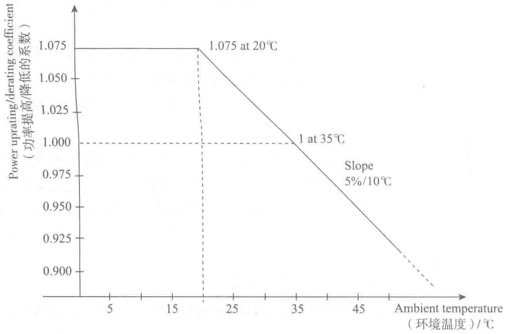
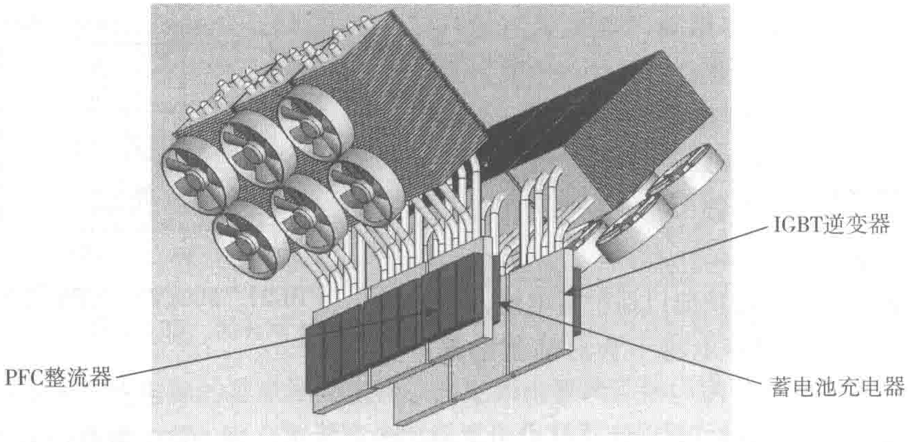

率器件继续正常运行。图10-23为冗余的通风系统示意图。
- 通过自动调节器、传感器或NTC（负温度系数）电阻对所有风机实施监控，一旦检测到故障，则立即发出报警。
- 所有功率器件的使用寿命均按照平均温度25℃条件下计算。若温度高于40℃（可设定参数），则显示“环境温度报障”信息。


4）可升级配置架构
- 当现场由于增大供电功率、新增需要保护的负载、配电系统变更等原因系统需要升级时，Galaxy 7000系列UPS借助灵活的模块化设计，可在不中断负载运行的情况下，处理升级过程中的各个步骤。